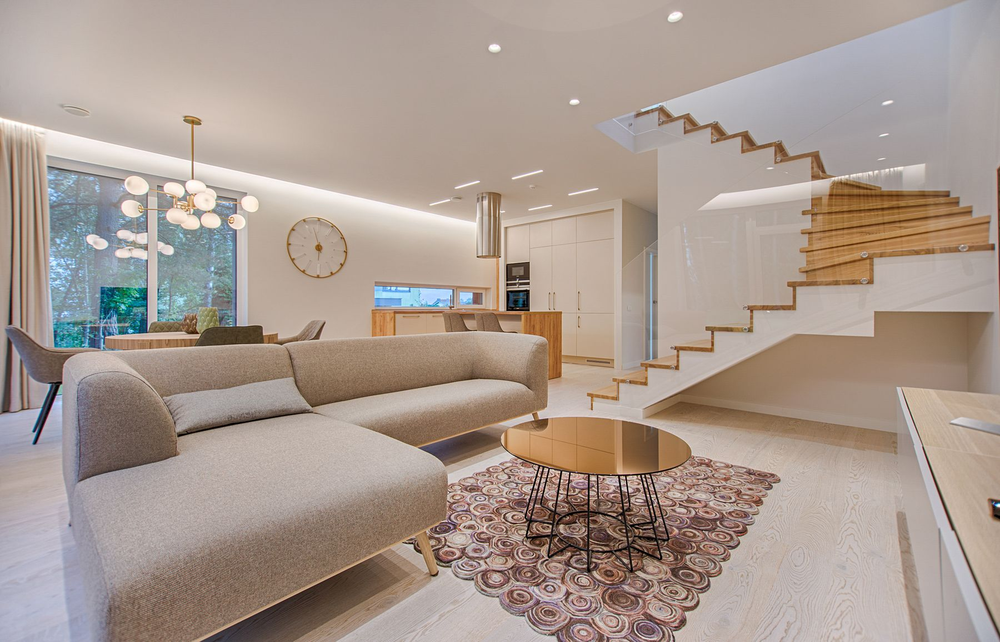
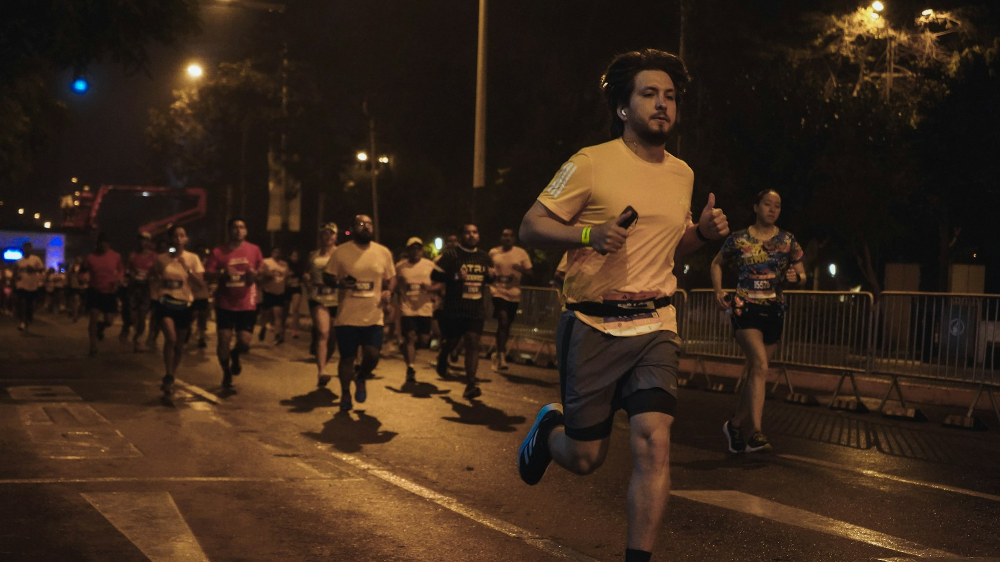

PRODUCT × BRAND × GRAPHIC
UI/UX
DESIGN ROUTER
一个入口，两套不互相污染的设计判断。
查看案例 / VIEW CASES ↓
两个全新混合案例先建立原创品牌，再进入真实产品闭环。界面由 HTML/CSS 构成；摄影证明对象，SVG 只表达适合矢量呈现的标识与路线。

01 / HOME RENOVATION SERVICEBRAND → PRODUCT
小户型改造 × 材料系统 × 预算决策
ROOMSHIFT 格间
进入空间改造方案- 核心任务
- 比较并配置
- 品牌延展
- 标识 · 样本盒 · 方案书
- 结果
- 预算、工期与概念摘要

02 / CITY NIGHT RUN EVENTBRAND → PRODUCT
赛事品牌 × 路线安全 × 报名与完赛传播
PULSELINE 脉线
进入城市夜跑赛事- 核心任务
- 选路线并报名
- 品牌延展
- 号码布 · 导视 · 完赛海报
- 结果
- 数字号码布与分享状态